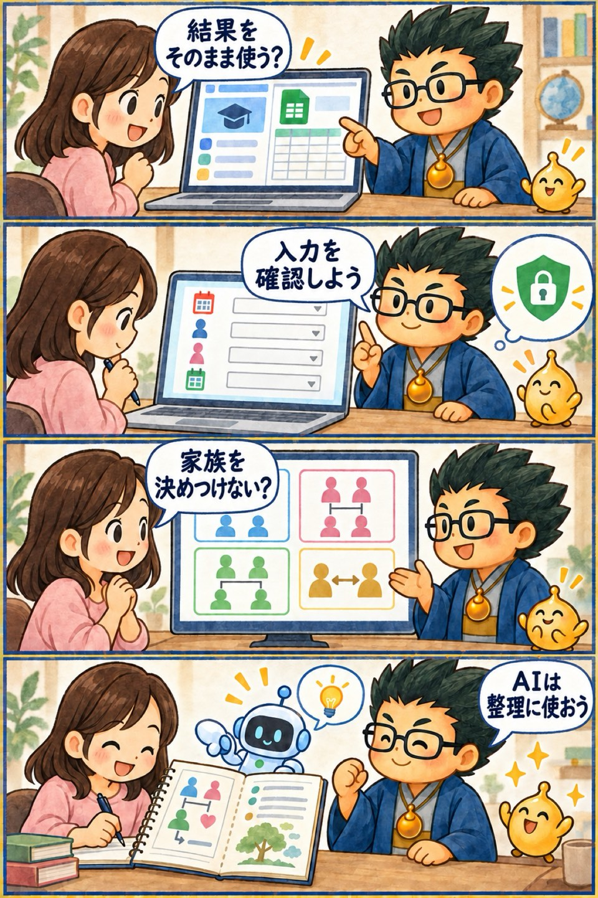

第2期 Zoom講座・第4回
占いシステムで家族・関係性を読む
この回の要約
鑑定システムと学習資料を行き来しながら、家族や身近な関係を安全に読む実践回です。
システムの結果をそのまま鑑定文にせず、図鑑と元資料で意味を確認します。
家族関係は誰かを悪者にせず、違いと役割を整理するために読みます。
AIノートは資料の検索と比較に使い、個人情報を入力する範囲へ注意します。
4コマ漫画でつかむ

タイムスタンプ
時間を押すと、上の動画がその場面から再生されます。
覚えておきたいこと
- 入力日付・時刻・場所を確認する
- 出力複数の結果を混ぜず、一項目ずつ読む
- 図鑑専門用語の意味を元資料で確かめる
- 関係性本人の実感と出来事を聞く
- AIノート出典を確かめながら整理する
復習ポイント
講義内の占術上の説明・時代の読み・象徴的な解釈は、講師の見立てです。客観的な事実や将来を保証するものではありません。